枪械：九把常用武器的定位
CS2 的武器选择不是"哪把最强"，而是"这个回合我买得起什么、要打多远、打算怎么打"。把常用枪按价格和用途分成四类，选择就清楚多了。
手枪是第一回合与残局的装备。T 方默认是 Glock-18，CT 方默认之一 USP-S 带消音器、更适合远距离点射与爆头；沙漠之鹰则以单发高伤害换取较慢的射速，是经济局里以小博大的选择。
冲锋枪是经济局的主力。它们价格便宜、射速快、近距离伤害优秀，但距离一拉开就明显乏力，所以更适合狭窄区域的防守和快速进攻，而不是中远距离的对枪。
步枪是正常回合的主力。AK-47 伤害高、爆头能力强，配 30 发弹匣，代价是后坐力明显、需要练习压枪；CT 方则在带消音器、弹匣较小的 M4A1-S 与持续火力更强的 M4A4 之间做选择。
狙击枪的代表是 AWP：单发伤害非常高，但价格昂贵、移动较慢，靠的是预瞄和位置意识，而不是反应速度。
下面是九把常用枪的完整清单，可以按类型筛选，也可以直接搜索名称：
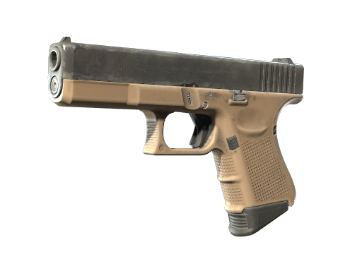
T 方默认手枪，价格低、弹匣容量较大，适合近距离战斗，第一回合中经常使用。优点是灵活、弹药较多，缺点是远距离伤害和精准度有限。
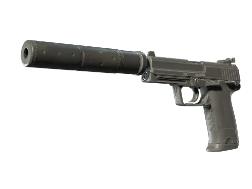
CT 方默认手枪之一，拥有消音器，精准度较高，非常适合远距离点射和爆头。弹匣容量较小，因此更加依赖精准射击，而不是连续开火。
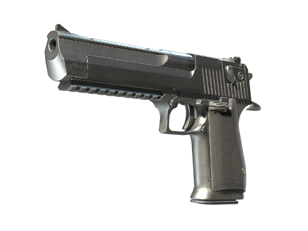
经典的大威力手枪，价格相对较低，但单发伤害非常高，精准命中时能够快速击杀敌人。射速较慢，对玩家枪法要求较高，是经济局里以小博大的选择。
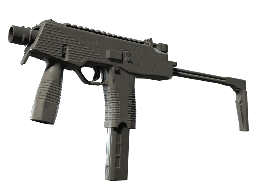
CT 常用冲锋枪，价格较低、射速快、近距离伤害优秀，适合经济局以及狭窄区域防守。
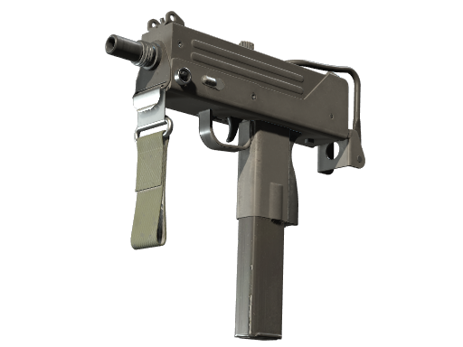
T 方常见冲锋枪，价格便宜、移动速度快，非常适合经济局进行快速进攻。
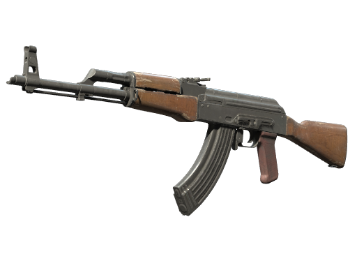
T 方最常用的步枪之一，拥有较高的伤害和优秀的爆头能力，30 发弹匣，适合中远距离战斗。缺点是后坐力较明显，需要练习压枪。
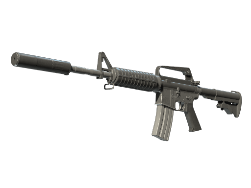
CT 方常用步枪，拥有消音器，射击稳定，后坐力相对容易控制，适合中远距离交战，但弹匣容量相对较小。
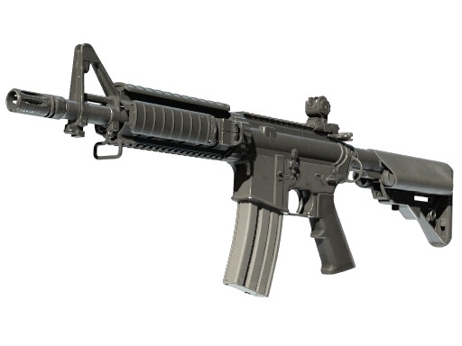
CT 方经典步枪，拥有较强的持续火力，适合中近距离战斗。在面对多个敌人时能够提供稳定的火力输出。
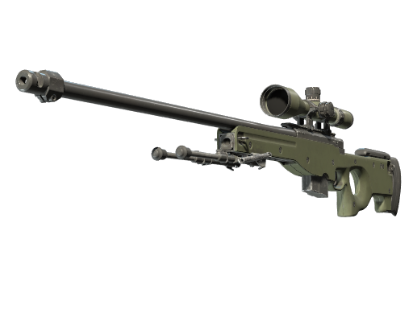
CS2 最具代表性的狙击枪之一，单发伤害非常高，可以快速击杀敌人。价格昂贵、移动较慢，需要玩家拥有较好的预瞄和位置意识。
同一把枪在不同回合里的价值并不相同：经济局里的冲锋枪能靠速度和射速打出优势，满买局里的冲锋枪却很难在中远距离对抗步枪。判断标准始终是"这个回合我要打多远、有几发子弹的机会"。
投掷物：七件能改写地图的道具
如果说枪械决定你能不能打死对手，投掷物决定的是你有没有机会看到对手。CS2 的投掷物可以按作用分成四类：视野类负责遮挡和致盲，伤害类负责逼迫和消耗，信息类负责欺骗，任务类则直接关系到回合目标。
烟雾弹能够遮挡视野，是 CS2 最重要的战术道具之一，可以用来封锁狙击位、保护队友过点、掩护下包以及阻挡 CT 回防；闪光弹则让范围内的玩家暂时失去视野，通常用于进攻前清理防守位置，或帮助队友突破关键区域。两者都在"让对方看不见"这件事上做文章，区别只在于时机与持续方式。
高爆手雷能够造成范围伤害，适合攻击躲在掩体附近的敌人，也可以在敌人集中时造成大量伤害。燃烧弹负责控制区域、阻止敌人推进，并迫使敌人离开防守位置——它不追求直接击杀，追求的是让对面没法站在那个位置上。诱饵弹能模拟枪声、制造假信息，虽然使用频率不如其他投掷物，但在特殊战术中有一定作用。
最后是C4：T 方需要把它安装在 A 点或 B 点，并保护炸弹直到爆炸。CT 方对应的装备是拆弹器，可以缩短拆除 C4 所需的时间，在残局中可能直接决定胜负。
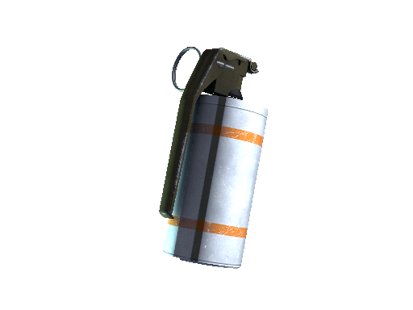
能够遮挡视野，是 CS2 最重要的战术道具之一。可以用来封锁狙击位、保护队友过点、掩护下包以及阻挡 CT 回防。
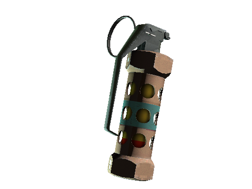
能够使范围内的玩家暂时失去视野。通常用于进攻前清理防守位置，也可以帮助队友突破关键区域。注意它同样会影响自己和队友。
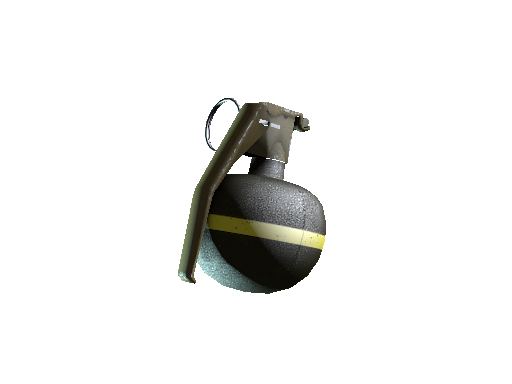
能够造成范围伤害，适合攻击躲在掩体附近的敌人，也可以在敌人集中时造成大量伤害。
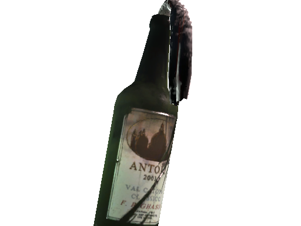
T 方使用的燃烧类投掷物，可以控制区域、阻止敌人推进，并迫使敌人离开防守位置。
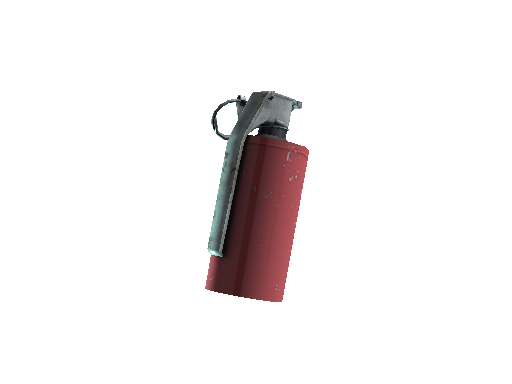
CT 方使用的燃烧类投掷物，作用与 Molotov 相同：封锁通道、拖延推进，把守在掩体后的敌人赶出来。
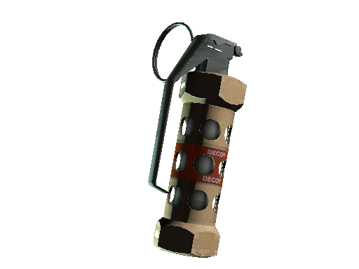
能够模拟枪声，可以用来制造假信息、干扰敌人判断。虽然使用频率不如其他投掷物，但在特殊战术中有一定作用。
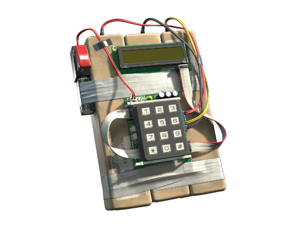
T 方的重要任务道具。T 方需要将 C4 安装在 A 点或 B 点，并保护炸弹直到爆炸，这是爆破模式里 T 方最直接的取胜方式。
这两件道具是同一类道具的两个阵营版本：T 方购买的是 Molotov（燃烧弹），CT 方购买的是 Incendiary Grenade（燃烧瓶）。它们的作用一致——控制区域、阻止推进、把敌人从掩体后赶出来——所以看到别人说"丢火"时，指的可能是其中任何一个版本。
买什么：装备取舍背后的经济账
知道每件装备的定位之后，真正难的是在每个回合开始时做出选择。经济充足时，优先保证步枪、防弹衣和必要的投掷物；经济不足时干脆少买甚至不买，把资源留给下一个回合；只差一点就能配齐的半买回合，则需要全队统一意见——装备买一半就硬打，往往比整齐的经济局更容易崩盘。
还有两个新手常见的误区。第一，把投掷物当成"剩下的钱随便买"的东西：烟雾和闪光经常比多买一把副武器更有价值，因为它们能让整支队伍安全通过一个路口。第二，只关心自己的枪：CS2 是五个人的装备总和在对抗，队友空手而自己满配，回合大概率还是会输。
- 手枪：Glock-18 是 T 默认手枪，USP-S 带消音器但弹匣小，沙鹰单发伤害高、射速慢。
- 冲锋枪便宜、射速快，是经济局与狭窄区域的主力。
- AK-47 弹匣 30 发、后坐力明显；M4A1-S 带消音器、弹匣较小，M4A4 持续火力更强。
- AWP 单发伤害极高，但价格昂贵、移动较慢，靠的是预瞄和位置意识。
- 道具按作用分四类：烟雾与闪光管视野，高爆与燃烧管伤害和控制，诱饵制造假信息，C4 是 T 方的任务道具。